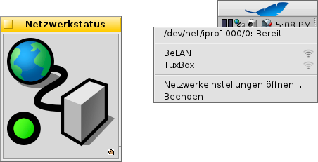

Deutsch
Deutsch Català
Català English
English Español
Español Français
Français Italiano
Italiano Magyar
Magyar Polski
Polski Português
Português Português (Brazil)
Português (Brazil) Română
Română Slovenčina
Slovenčina Suomi
Suomi Svenska
Svenska 中文 ［中文］
中文 ［中文］ Русский
Русский Українська
Українська 日本語
日本語 Netzwerkstatus
Netzwerkstatus
| Deskbar: | ||
| Ort: | /boot/system/apps/NetworkStatus | |
| Einstellungen: | keine |
Netzwerkstatus informiert über den aktuellen Zustand der Netzwerkverbindung. Wenn das Programm nicht schon läuft, kann man beim Start entscheiden, ob das Applet in einem Fenster laufen oder in die Deskbar installiert werden soll. Im Fenstermodus kann die Symbolgröße geändert werden, indem man die Fenstergröße anpasst, bevor man es am Replikanten-Symbol packt und auf den Desktop zieht.
Wo das Applet auch installiert ist, bedient wird es per Rechtsklick über ein Kontextmenü.

Der oberste Bereich zeigt alle Netzwerkgeräte und deren momentaner Zustand. Der Klick auf einen Eintrag öffnet ein Fenster mit dessen IP-, Broadcast- und Netzmasken-Adresse.
Darunter befindet sich eine Liste aller vom ersten WLAN-Adapter gefundenen Funknetzwerke und deren Signalstärke. Weitere Informationen zum Thema WLAN finden sich im Workshop: Funknetzwerke nutzen.
Zu guter Letzt lassen sich aus dem Menü noch die um die Netzwerk-Konfiguration zu ändern und das Applet .
Statussymbole
| Bereit | Die Verbindung ist hergestellt. | ||
| Konfigurierung läuft | Die Verbindung wird hergestellt. | ||
| Statusloser Zustand | Einige Einstellungen fehlen (siehe IP Konfiguration). | ||
| Nicht verbunden | Es existiert keine physische Verbindung (vielleicht ist kein Netzwerkkabel angeschlossen oder es wurden keine Funknetzwerke gefunden). | ||
| - | Es wurden keine Netzwerkgeräte gefunden (wahrscheinlich fehlen für die Hardware entsprechende Treiber). |